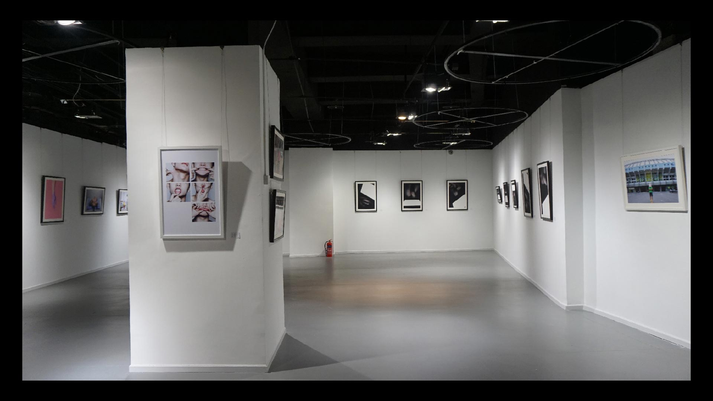

首页
艺术课程
艺术活动
学员作品展示
3-7-20艺术创作之旅
Critiques
Reading Group
艺术展览
Visiting Artist
艺术实验
下拉查看更多
艺术批评（Critique）是西方艺术教育中常用的研究方法。要求参与者具有较高的理论素养并主张畅所欲言的指摘同伴作品的得与失。艺术批评时常鼓励跨专业进行。大船艺术自开办初就坚持定期进行全体学生参与的艺术批评活动。同学们一方面体验到最纯正的艺术讨论气氛，另一方面也直观的了解到西方高等艺术教育的常用方式。
阅读讨论小组体现了大船艺术对创作实践与理论研究的同等重视。在阅读讨论小组中，我们鼓励学生调研和分享项目相关的著作，同时我们的老师也会定期搜集重要的参考资料、书单，在讨论小组活动上，老师与学生将阅读，分享，讨论各领域背景下的专业知识，在其中寻找启发性的论点，帮助同学们在今后的创作中积累更加丰富的认知与态度。
下拉查看更多
理论与实践，克制与冲动，非议与己见，只有将作品付诸展览，学生才能体会到在创作者与受众之间存在的各种关系。无论艺术还是设计，你眼中的世界与观众眼中的你，存在着复杂的关系与矛盾。大船艺术致力于为学生在真正的艺术空间中举办正式展览，并公开宣传展示，这不仅能为学生提升创作生涯背景，更是学生的一次真正的展览体验。

下拉查看更多
每年的11月，正值作品集完成及学校申请的最后阶段，大船艺术都会邀请一名外国青年艺术家驻留在工作室中。艺术家不仅会在工作室中进行讲座，还会融入集体，参与工作室日常的一切活动，更可以随时为学生的作品集提供第一手的西方艺术家意见。每一个大船艺术的学生，都可以预约1对1的艺术家面对面交流，直接询问关于自己作品与申请的意见想法。
下拉查看更多
大船艺术致力于为学生们实现一切靠谱的及不靠谱的艺术构想。在当代艺术中观众与艺术家的界限愈发模糊的今天，大船鼓励每一位学生尝试设计并实行自己的艺术实验活动，在一定的艺术构想下，开放对社会大众的报名，由大船艺术提供场地与组织，从而完成完整的公众艺术体验活动，在活动中获得关于社会学，心理学乃至哲学的艺术探索。